Raid for cargo
Collect asteroids, containers, enemy salvage, contraband and rare artifacts, then decide when the hold is full enough to extract.

Android alpha v0.81
Enter a hostile sector, fill the cargo hold, survive pirates and creatures, then escape before deep space takes everything back.
Loot, risk, extraction
STARJACKERS mixes fast space combat with cargo-based progression, blueprints, crafting, traders, and story projects. A cheap wreck, a mineral chunk, or a pirate case can change the next run.
The deeper the sector, the better the payout and the harsher the loss. Deep Space, Pirate Bay, Toxic Area, Gravity Well, and Hidden Dimension reward greed only when you make it home.
Collect asteroids, containers, enemy salvage, contraband and rare artifacts, then decide when the hold is full enough to extract.
Explorer, Viper, Avenger, Arrow, Invader, BISON and Pathfinder use different cargo slots, safe pockets, weapons, engines, gadgets and shields.
Deliver exact items to projects such as Supply to Survive, Space Mayhem, Omerta, Alien Secrets and Cryoshade Meats to unlock rewards.
Projects and loading screens
Hangar
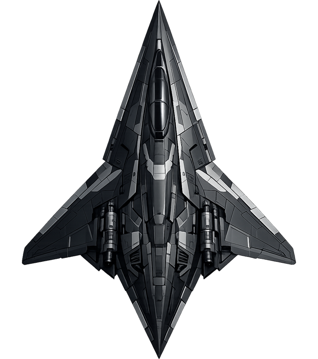
Starter hauler
Balanced and dependable. A forgiving first ship with enough cargo to learn when to push and when to run.
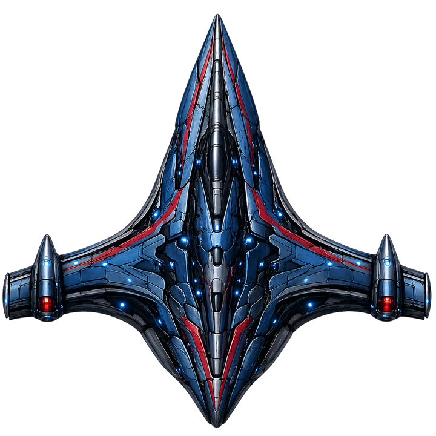
Fast gunship
Quick, agile and armed for aggressive pickups. It rewards pilots who can dodge pressure instead of absorbing it.

Armored fighter
A military hull with heavier protection and a direct combat feel. Slower turns, harder decisions, bigger teeth.
Speed runner
Light cargo, high speed and sharp handling. Built for daring routes, quick grabs and clean extraction lines.
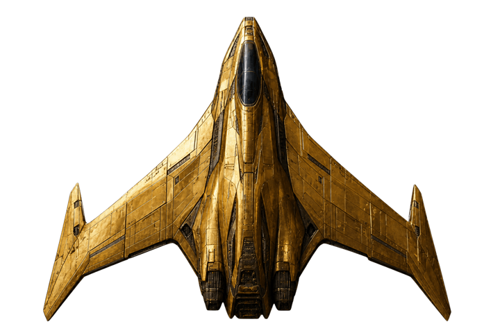
Utility raider
A flexible black-market platform with extra safe storage and support options for tricky sector objectives.

Heavy cargo truck
The big hold. More cargo, more salvage, more profit and more reasons to panic when the route collapses.

Specialist scout
A precise scout with gadget and support space for special contracts, research routes and careful treasure hunting.
Gadgets and equipment

Explosive rockets with target lock for enemies that refuse to drift politely.

A fast nose-fired strike that detonates on impact in a compact blast.

Drops a slowing pulse that makes nearby ships and weapons sluggish.

Locks onto collectible objects and tows them behind the ship while held.

Anchors behind the ship and fires at the closest hostile contact.
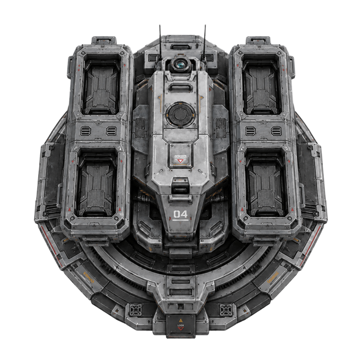
A deployable turret that trades subtlety for straight explosive pressure.
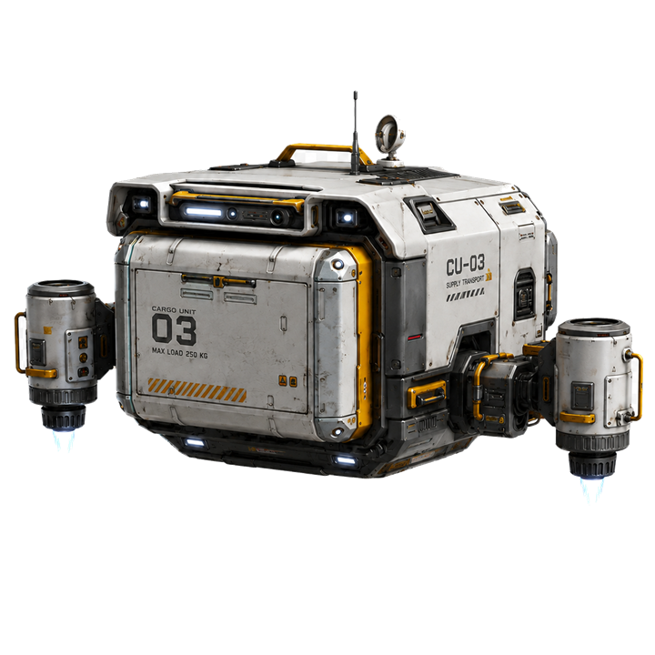
Evacuates marked cargo to extraction so one valuable item survives even if the ship does not.
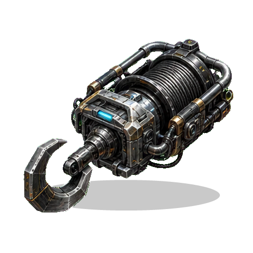
A contraband grapple that steals unsecured cargo from the nearest enemy ship.
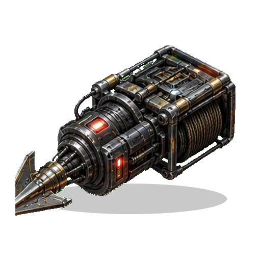
Latches onto an enemy ship, drags it toward you and slows its weapons.
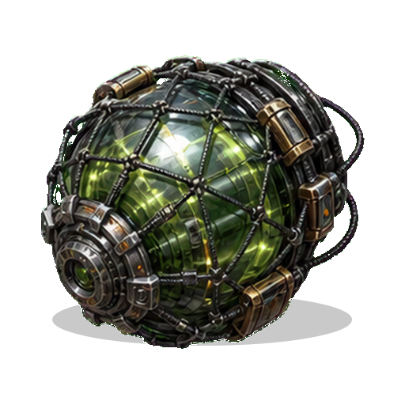
A black-market capture capsule that can turn a hostile astronaut into valuable cargo.
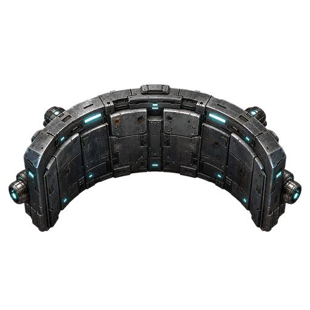
Deploys a heavy drifting hull wall that blocks fire and can be shoved into position.

Pings faster and louder as you approach hidden treasure.
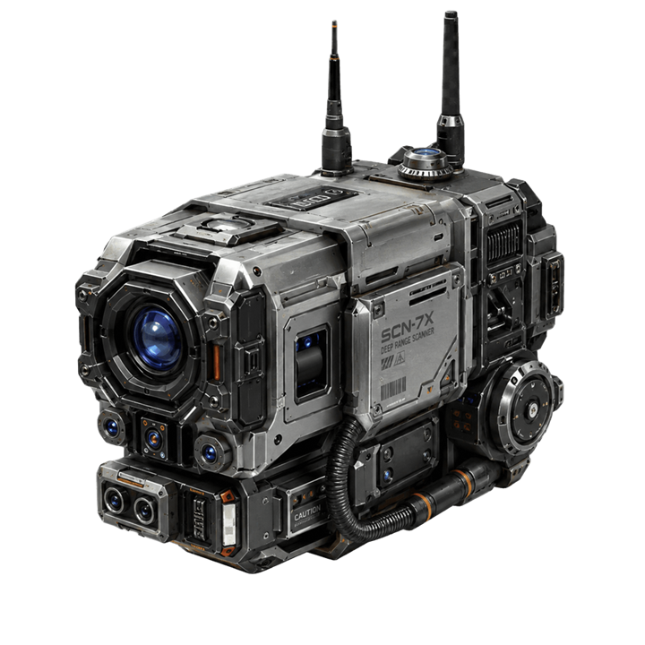
Reveals ships and enemies hiding inside nebulas, fire clouds and cover.
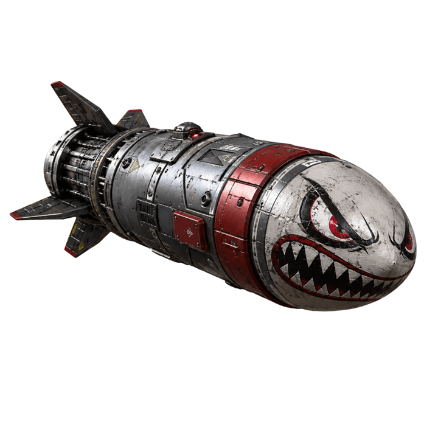
Drops behind the ship, arms, then surges forward into a heavy blast.
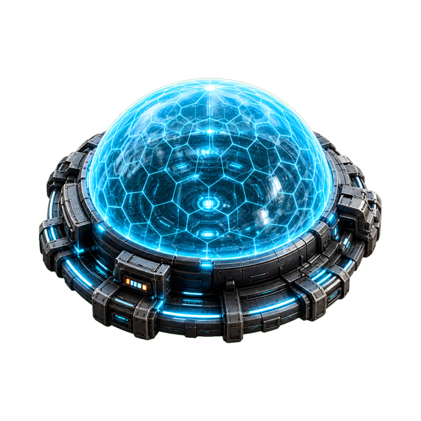
A defensive layer for pilots who expect the extraction route to get ugly.
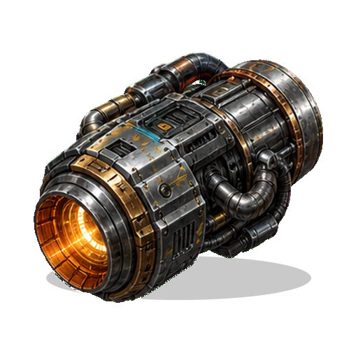
Illegal speed with a shield penalty. Perfect when survival means leaving first.
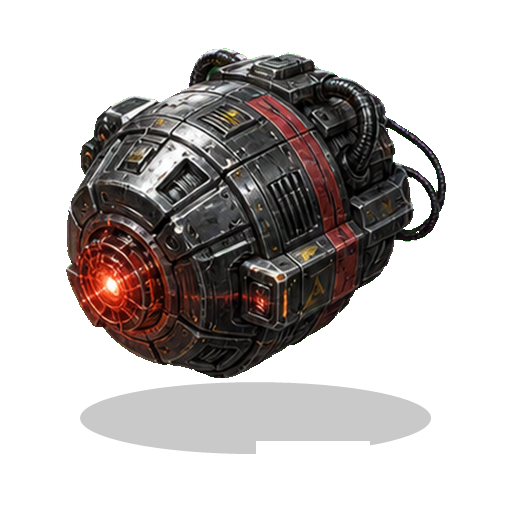
A focused demolition charge for cracking obstacles and opening paths.
Sectors and threats

Pirate Fighters, Hunter Lance ships, Radar Ships, Space Mantas, Gravity Squids, Pirate Bases, Motherships, Cosmic Worms and Rift Wardens all pressure the route in different ways.
GitHub project
It lives in the docs folder, so GitHub Pages can publish it directly from the main branch without a build step.